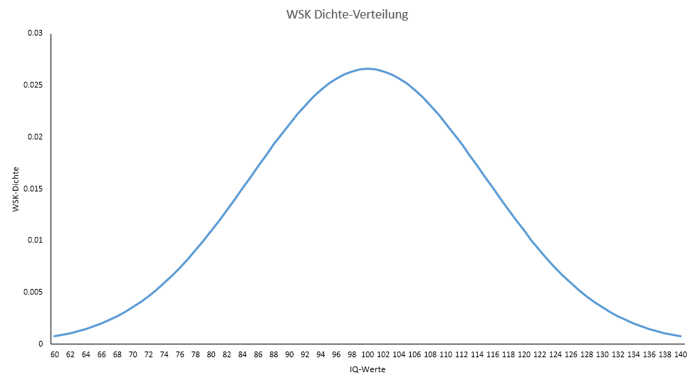
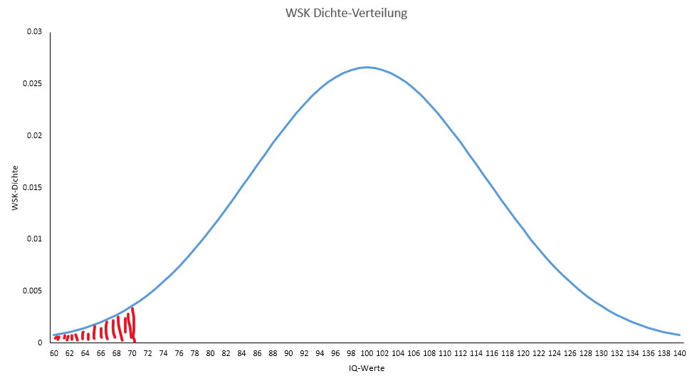

Sitzung 4: Arbeiten mit Wahrscheinlichkeitsverteilungen
1 Warum sind Wahrscheinlichkeitsverteilungen wichtig?
In der letzten Vorlesungssitzung haben Sie gelernt, warum Wahrscheinlichkeiten und Wahrscheinlichkeitsverteilungen für Statistik wichtig sind. Hoffentlich haben Sie sich das Folgende gemerkt:

In der Statistik benutzen wir theoretische Wahrscheinlichkeitsverteilungen um empirische (also beobachtete) Ereignisse zu beurteilen.
Zum Beispiel können wir mit Hilfe von theoretischen Wahrscheinlichkeitsverteilungen einschätzen, wie wahrscheinlich ein beobachtetes Ereignis unter Annahme der Nullhypothese ist.
Eine Wahrscheinlichkeitsverteilung gibt an, wie sich die Wahrscheinlichkeiten auf die möglichen Ausprägungen einer Zufallsvariablen verteilen.
Eine Zufallsvariable oder Zufallsgröße ist eine Größe, deren Ausprägung (Wert) vom Zufall abhängig ist.
In der Vorlesung haben Sie zwei grundlegende Arten von Zufallsvariablen kennengelernt:
diskrete Zufallsvariablen: solche, die nur endlich viele oder abzählbar unendlich viele Werte annehmen können. „Abzählbar unendlich“ heißt ganz einfach, dass die Menge der Ausprägungen durchnummeriert werden kann.
kontinuierliche bzw. stetige Zufallsvariablen: solche, die unabzählbar unendlich viele Werte annehmen können. Stetige Zufallsvariablen können innerhalb eines Intervalls unendlich viele Ausprägungen haben.
Sollten Sie mehr über die Vorteile wissen wollen, die es mit sich bringt, alltagsrelevante Phänomene als Realisierungen von Zufallsvariablen zu betrachten, bietet sich dafür das Buch “Die Kunst der Statistik”/“The Art of Statistics” von David Spiegelhalter an. Es ist unterhaltsam geschrieben und gut verständlich (deutsche Ausgabe, ebook Deutsch, englische Ausgabe, ebook Englisch)! Unbezahlte Werbung natürlich :)
In der heutigen Seminarsitzung wollen wir beide Arten von Zufallsvariablen und ihre entsprechenden Verteilungen noch einmal genauer unter die Lupe nehmen. Die Excel-Datei, die Sie benötigen, finden Sie hier.
2 Diskrete Zufallsvariablen - Magische Münzen und Raten in Klausuren
Beginnen wir zunächst mit diskreten Zufallsvariablen und schauen wir uns an, was man mit dem Wissen über theoretische Wahrscheinlichkeitsverteilungen in einem solchen Fall anstellen kann.
2.1 Ist diese Münze fair?
Stellen Sie sich vor, Sie finden eine seltsam aussehende Münze (s. Bild). Sie fragen sich, ob es sich bei dieser Münze um eine “faire” Münze handelt oder nicht. Wäre die Münze “fair”, dann wäre die Wahrscheinlichkeit für das Ereignis “Kopf” gleich der Wahrscheinlichkeit für das Ereignis “Zahl”. Da “Kopf” oder “Zahl” die einzigen beiden Ausprägungen sind, die aus einem Münzwurf resultieren können (deshalb sprechen wir hier von einer “diskreten” Zufallsvariablen), würde für eine “faire” Münze gelten, dass p(Kopf) = p(Zahl) = 0.5.
Sie entschließen sich, die komische Münze 100 Mal zu werfen und dabei zu zählen, wie oft das Ereignis “Kopf” aufgetreten ist. Das Ergebnis: Sie haben 58 Mal “Kopf” geworfen. Wie sehr glauben Sie daran, hier eine “faire” Münze vor sich zu haben?
Die erste Frage, die wir uns nun stellen ist: Wie würde die Wahrscheinlichkeitsverteilung für das Ereignis “Kopf werfen” aussehen, wenn man das, was Sie gerade gemacht haben – nämlich die Münze 100 Mal zu werfen – ganz oft (theoretisch unendlich oft) wiederholen würde und jedes Mal notieren würde, wie viele von den 100 Würfen “Kopf” waren?
Diese Wahrscheinlichkeitsverteilung kann man mit MS-Excel sehr leicht erstellen. Öffnen Sie dazu die erste Arbeitsmappe “Binomialverteilung 1 Aufgabe”. Neben den ganzen Aufgaben finden Sie dort weiter unten eine vorgefertigte Tabelle (s. Bild unten). In Spalte A “Anzahl Kopf (Erfolge = k)” sind alle möglichen Ergebnisse unseres Gedankenexperiments aufgelistet: Es könnte sein, dass von 100 Würfen genau 0 Mal “Kopf” geworfen wird, oder das genau 1 Mal “Kopf” geworfen wird und so weiter. In Spalte B “Wahrscheinlichkeit bei fairer Münze (p = 0.5)” sollen Sie jetzt eintragen, wie wahrscheinlich jedes der möglichen Ergebnisse ist, sollte es sich wirklich um eine faire Münze handeln.

2.1.1 Die Funktion “=Binom.Vert()”
Dazu benutzen wir in Excel die Funktion “=BINOM.VERT()”, was für “Binomialverteilung” steht (mehr Infos dazu auf dieser sehr nützlichen Seite “Mathe-Guru” hier). Schreiben Sie in Zelle B34 Folgendes:

Das erste Argument der Funktion ist das Ergebnis des Gedankenexperiments (auch “Zahl Erfolge” genannt). Da wir als erstes ermitteln wollen, wie wahrscheinlich es ist, dass man bei 100 Münzwürfen genau 0 Mal “Kopf” wirft, tragen wir dafür den Wert aus Zelle A34 ein. Das zweite Argument ist die Anzahl der Versuche innerhalb des Gedankenexperiments. Das ist in unserem Fall 100. Danach soll die Erfolgswahrscheinlichkeit angegeben werden. Da wir hier von der Annahme ausgehen, die Münze sei fair, tragen wir hier 0.5 ein. Danach können wir angeben, ob die Wahrscheinlichkeiten der verschiedenen möglichen Ergebnisse aufaddiert werden sollen oder nicht. Da wir das nicht möchten, schreiben wir “FALSCH”. Unten sehen Sie noch einmal, welche Argumente die Funktion benötigt.

Das Ergebnis ist 7.88861E-31. Also 0.0000000…. (hier kommen insgesamt 31 Nullen) und dann 788861. Damit ist die Wahrscheinlichkeit bei 100-maligem Werfen einer fairen Münze niemals “Kopf” zu werfen praktisch Null. Das entspricht hoffentlich auch Ihrer Intuition. Als nächstes können Sie durch “Runterziehen” die Tabelle vervollständigen, um so alle Wahrscheinlichkeiten aufzulisten.
2.1.2 Grafische Abbildung der Verteilung
Diese theoretische Wahrscheinlichkeitsverteilung unseres Gedankenexperiments können Sie nun grafisch mittels eines Säulendiagramms darstellen. Markieren Sie dazu alle Werte der Spalten A und B und klicken Sie in den Grafikoptionen auf Säulendiagramm. Vergeben Sie auch einen sinnvollen Titel und beschriften Sie die Achsen. Das Ergebnis sollte so ungefähr so aussehen:

2.1.3 Wahrscheinlichkeiten bestimmen
Überlegen Sie nun, welches Ergebnis bei 100-maligem Werfen einer fairen Münze am wahrscheinlichsten ist. Wo sieht man das in der Abbildung der Verteilung? Sie sollten feststellen, dass das Ergebnis “50 Mal Kopf” das am ehesten zu erwartende ist.
Schauen Sie nun in der Tabelle der Wahrscheinlichkeitsverteilung nach und sehen Sie sich an, wie wahrscheinlich genau dieses am ehesten zu erwartende Ereignis “50 Mal Kopf” ist. Das Ergebnis (Ihnen sollte auch klar sein, dass es sich hier um bedingte Wahrscheinlichkeiten handelt): p(“50 Mal Kopf bei 100 Würfen”| faire Münze) = 0.079589, also knapp 8%. Genau 50 Kopfwürfe bei 100 Würfen einer fairen Münze sind also recht unwahrscheinlich – aber dennoch wahrscheinlicher als jedes andere Ergebnis.
Sie erinnern sich: Als Sie die seltsam aussehende Münze 100 Mal geworfen hatten, hatten Sie 58 Mal “Kopf” geworfen. Wie wahrscheinlich ist es 58 Mal oder noch öfter Kopf zu werfen, wenn die Münze fair ist? Wie können Sie das mit Hilfe der angelegten Tabelle der Wahrscheinlichkeitsverteilung herausfinden? Lösung: berechnen Sie in Zelle F12 die Summe der Zellen B92 bis B134, also “=SUMME(B92:B134)”. Das Ergebnis: 0.0666, also eine recht kleine Wahrscheinlichkeit.
Alternativ können Sie sich auch die kumulierte Wahrscheinlichkeitsverteilung ausgeben lassen. Nutzen Sie dazu die Spalte C und setzen im letzten Argument des binom.vert-Befehls “wahr” ein. Welche Wahrscheinlichkeiten werden jetzt ausgegeben? Erstellen Sie eine Grafik. Wie lässt sich die Wahrscheinlichkeit für “58 mal Kopf oder öfter” mit der kumulierten Wahrscheinlichkeitsverteilung bestimmen?
Berechnen Sie nun die Wahrscheinlichkeit, bei 100 Würfen einer fairen Münze weniger als die von Ihnen beobachteten 58 Mal “Kopf” zu bekommen. Das Ergebnis: p(weniger als 58 Mal “Kopf”| faire Münze) = 0.933. Sollte die Münze fair sein, wird man also in gut 93% der Fälle bei 100 Würfen weniger als 58 Mal “Kopf” werfen.
Schauen Sie nun noch in der Tabelle nach, wie wahrscheinlich es ist, genau 58 Mal “Kopf” zu werfen.(All diese Wahrscheinlichkeiten lassen sich sowohl mit der unkumulierten als auch der kumulierten Wahrscheinlichkeitsverteilung bestimmen.)
Nachdem Sie nun eine Weile mit der theoretischen Wahrscheinlichkeitsverteilung gearbeitet und ein paar Wahrscheinlichkeiten berechnet haben, wie sieht es mit ihrem Gefühl aus? Haben Sie da eine faire Münze vor sich?
2.1.3.1 Neues Wissen
Stellen Sie sich nun folgendes vor: Sie treffen eine Freundin, der diese Art Münze bekannt ist. Sie weiß, dass diese Münze aus einem Geschäft für Zauberzubehör stammt. Dort gibt es genau zwei verschiedene Typen dieser Art Münze. Ein Münztyp ist tatsächlich fair und der andere “unfair”. Ihre Freundin weiß auch, dass die unfairen Münzen so gestaltet sind, dass sie mit 70%-iger Wahrscheinlichkeit “Kopf” produzieren.
Wie würde die Wahrscheinlichkeitsverteilung für “Kopf” aussehen, wenn es sich um eine Münze vom “unfairen” Typ handeln würde? Benutzen Sie Spalte D der bestehenden Tabelle, um diese Wahrscheinlichkeitsverteilung zu ermitteln. Machen Sie anschließend auch wieder eine Grafik der Verteilung. Versuchen sie sogar, eine gemeinsame Abbildung zu erstellen, die beide Wahrscheinlichkeitsverteilungen zeigt. Das Ergebnis sollte ungefähr so aussehen:

Hier noch ein kurzes Tutorial für das Erstellen einer Grafik mit zwei Wertereihen:
Berechnen Sie nun die bedingte Wahrscheinlichkeit, bei einer Münze des “unfairen” Typs 58 oder mehr Mal “Kopf” zu werfen. Berechnen Sie dann die bedingte Wahrscheinlichkeit, höchstens 57 Mal “Kopf” zu werfen, wenn eine Münze vom “unfairen” Typ ist. Zuletzt noch die Wahrscheinlichkeit, in diesem Fall genau 58 Mal “Kopf” zu werfen. Die Ergebnisse sind:

Wie haben die Information über die Münzen, die Sie von besagter Freundin erhalten haben, und die gerade durchgeführten Berechnungen ihre Intuition verändert? Spricht das beobachtete Ergebnis von 58 Mal “Kopf” nun eher dafür, dass Sie eine Münze vom “fairen” oder eine Münze vom “unfairen” Type vor sich haben?
Setzen Sie zuletzt die zwei bedingten Wahrscheinlichkeiten für “genau 58 Mal ‘Kopf’”, die sich aus den beiden theoretischen Verteilungen ergeben, ins Verhältnis. Wie viel wahrscheinlicher ist “58 Mal Kopf” wenn eine Münze vom Typ “fair” ist als wenn sie vom Typ “unfair” ist? Schreiben Sie das Ergebnis in Zelle G29. Sie sollten herausbekommen haben, dass das beobachtete Ergebnis von 58 Mal “Kopf” knapp 7x wahrscheinlicher ist, wenn es sich um eine Münze aus dem Zaubershop handelt, die vom “fairen” Typ ist.
2.2 Simulation
In der Shiny-App (bereitgestellt von der Uni Albany) unten sehen Sie einen “Verteilungssimulator” für die Binomialverteilung. Wie Sie schon wissen, sind \(p\) (die Wahrscheinlichkeit für “Erfolg”) und \(n\) (Anzahl der Wiederholungen) die wichtigen Parameter der Verteilung. Benutzen Sie den Simulator, um nacheinander die beiden Verteilungen unseres Szenarios nachzubilden. Mit den Optionen unter “Find probabilities for regions using Cut Points” können Sie versuchen, die Wahrscheinlichkeiten, die Sie bereits in Excel ermittelt haben, zu erhalten.
2.3 Verteilungsschiefe
Ein weiteres Merkmal einer Wahrscheinlichkeitsverteilung ist deren “Schiefe”. Eine Verteilung kann symmetrisch oder asymmetrisch sein. Asymmetrische Verteilungen lassen sich dann weiter kategorisieren. Es gibt rechtsschiefe und linksschiefe Verteilungen. Eine Illustration sehen Sie unten. Welcher Parameter der Binomialverteilung bestimmt die Schiefe der Verteilung? Benutzen Sie wieder den Simulator oben, um das herauszufinden. Versuchen Sie auch einmal, eine deutlich rechtsschiefe Verteilung in Excel zu erstellen. Weitere Hintergrundinformationen dazu gibt es z.B. hier.

2.4 Zusatzaufgabe
Sie finden in der Excel-Datei noch weitere Übungsaufgaben in der Arbeitsmappe “Binomialverteilung 2 Aufgabe”. Diese können Sie versuchen, eigenständig zu lösen. Schauen Sie nur in die Arbeitsmappe mit der Lösung, wenn Sie nicht weiterkommen.
3 Stetige/ kontinuierliche Zufallsvariablen
Nicht alle Zufallsvariablen sind diskret. Wie zu Beginn erwähnt, können Zufallsvariablen auch kontinuierlich bzw. stetig sein. Vereinfacht formuliert bedeutet “kontinuierlich” bzw. “stetig”, dass man die Ausprägung der Variable in einem gegebenen Fall theoretisch unendlich “fein”/ “genau” messen könnte – bloß sind eben die Messinstrumente, die wir benutzen, nicht unendlich präzise. Wenn Sie einen Moment überlegen, werden Sie feststellen, dass ziemlich viele Variablen in Ihrem Alltag tatsächlich kontinuierlich statt diskret sind, z.B. die Körpergröße oder die Intelligenz von Menschen, die Höhe der Bäume im Stadtpark, das Gewicht der Einkaufstasche, die Wartezeit beim Zahnarzt, die Temperatur draußen und so weiter.
3.1 Wahrscheinlichkeitsdichte- anstatt Wahrscheinlichkeitsverteilung
Was bedeutet die Eigenschaft der “Kontinuierlichkeit” von Variablen für ihre Wahrscheinlichkeitsverteilung? Denken Sie noch einmal an diskrete Zufallsvariablen zurück. Im oben behandelten Münzwurfszenario ließ sich zum Beispiel dem Ereignis “58 Mal Kopf bei 100 Münzwürfen” eine bestimmte Wahrscheinlichkeit zuordnen. Diese hatten Sie mit Hilfe der theoretischen Binomialverteilung ermittelt. Lassen sich einzelnen Ereignissen bei kontinuierlichen Variablen auch Wahrscheinlichkeiten zuordnen? Denken Sie z.B. an folgende Frage: Wie viele von 100 Bäumen im Stadtpark sind genau 15m hoch? Die Antwortet lautet “null”, denn selbst Bäume, die sehr nah an der Marke von 15m sind, werden ab einer gewissen Nachkommastelle von dieser Marke abweichen und auch voneinander. Kein Baum wird exakt 15m hoch sein und keine zwei Bäume werden exakt gleich hoch sein. Einzelnen Ereignissen (oder “Ausprägungen der Variablen”) eine Wahrscheinlichkeit zuzuordnen macht bei kontinuierlichen Zufallsvariablen keinen Sinn. Stattdessen könnte man aber sehr wohl folgende Frage stellen: “Wie viele von 100 Bäumen im Stadtpark sind ungefähr 15m hoch?” Diese Frage ist sinnvoll aber noch etwas unpräzise. Sie würden hier wahrscheinlich zunächst die Gegenfrage stellen, was denn mit “ungefähr” eigentlich gemeint sein soll. Eine Präzisierung der Frage könnte dann sein: “Wie viele von 100 Bäumen im Stadtpark sind zwischen 14,5m und 15,5m hoch?” Diese Frage ist präzise und bezieht sich auf ein bestimmtes Intervall bzw. einen bestimmten Abschnitt oder Wertebereich des Ausprägungsraums der Variablen.
Was wir bei kontinuierlichen Variablen also tun müssen, ist, nicht die Wahrscheinlichkeit von bestimmten Ausprägungen der Variablen, sondern die Wahrscheinlichkeit bestimmter Wertebereiche zu ermitteln. Über alle (unendlich vielen) Werte eine kontinuierlichen Variablen ergibt sich eine kontinuierliche Verteilung, bei der auf der Y-Achse nicht die Wahrscheinlichkeit, sondern die Wahrscheinlichkeitsdichte abgetragen wird. Unten sehen Sie noch einmal die Folie aus der VL.

3.2 Bestimmen von Wahrscheinlichkeiten
Um im Falle kontinuierlicher Variablen Wahrscheinlichkeiten zu bestimmen, müssen wir ermitteln, wie viel Fläche von der Gesamtfläche unter der Kurve ein bestimmter, definierter Wertebereich, \(P(k'\leq X \leq k)\), einnimmt. Wir müssen also Integralrechnung betreiben. Aber anhand welcher “Kurve”? Was ist hier die Verteilung, die man theoretisch annehmen kann?
Es gibt eine ganze Reihe theoretische kontinuierliche Verteilungen (z.B. stetige Gleichverteilung, Exponentialverteilung, Normalverteilung, etc.). Eine Liste finden Sie z.B. hier. Welche man zur Bestimmung von Wahrscheinlichkeiten in einem gegebenen Szenario verwenden muss, hängt vom Szenario ab.
3.3 Normalverteilung
Die wohl bekannteste und am häufigsten in der Statistik verwendete stetige Verteilung ist die Normalverteilung (auch Gauß-Verteilung). Mit ihr lassen sich sehr viele Phänomene (Variablen) in der Welt gut beschreiben. Die Normalverteilung scheint also eine fundamentale Beschaffenheit der Natur abzubilden. Auf dem Screenshot der Vorlesungsfolie oben sehen Sie, wie die Normalverteilung aussieht. Diese dort abgebildete Wahrscheinlichkeitsdichteverteilung einer Zufallsvariable \(X\) ist beschrieben durch die Funktion:

An der Gleichung oben sehen Sie, dass jede Normalverteilung durch zwei Parameter charakterisiert ist, und zwar:
- Mittelwert: \(\mu\)
- Standardabweichung: \(\sigma\)
Der Mittelwert bestimmt die Lage der Verteilung (sind die Werte eher hoch oder eher niedrig?) und die Streuung bestimmt die Breite der Verteilung (ist die Kurve eher schmal oder eher breit?). Wenn man z.B. die Körpergröße von Menschen anhand einer Normalverteilung beschreiben will, so werden sich andere Werte für \(\mu\) und \(\sigma\) ergeben, als wenn man die Höhe der Bäume im Stadtpark beschreiben will. Unabhängig von \(\mu\) und \(\sigma\) gilt aber für alle Normalverteilung z.B. Folgendes:
- die Kurve ist immer symmetrisch.
- 68% aller Werte fallen in den symmetrischen Bereich des ±1-fachen der Standardabweichung vom Mittelwert.
- 95% aller Werte fallen in den Bereich des ±2-fachen der Standardabweichung vom Mittelwert.
Nehmen wir bspw. an, dass sich die Höhe von Bäumen im Stadtpark ganz gut durch eine Normalverteilung bestimmen lässt. Nehmen wir auch an, dass die Parameter der Verteilung (durch unzählige Messungen auf der ganzen Welt) relativ sicher bekannt sind, z.B. \(\mu\,= 10m\) und \(\sigma\,= 2m\). Dann würde die dazugehörige Normalverteilung so aussehen:

Unsere Ausgangsfrage war, wie wahrscheinlich es ist dass ein Baum im Stadtpark zwischen 14,5 und 15m hoch ist. Die Fläche unter der Normalverteilung mit \(\mu\,= 10m\) und \(\sigma\,= 2m\), die in diesen Bereich fällt, ist in der Abbildung blau markiert. Unter der Abbildung sehen Sie die Größe dieses Flächenanteils. Der Flächenanteil entspricht der gesuchten Wahrscheinlichkeit. Die Wahrscheinlichkeit, dass ein Baum im Stadtpark zwischen 14,5 und 15 hoch ist, ist also ziemlich klein, nur 0,9%. (Natürlich war das nur ein fiktives Beispiel zur Veranschaulichung, wie die Parameter der Normalverteilung für Stadtparkbäume tatsächlich sein müsste, wissen wir nicht, dazu müssten wir Botaniker fragen.)
3.4 Rechnen mit der Normalverteilung in Excel – IQ und Schule
Als nächstes sollen Sie ausprobieren, wie man mit Hilfe von Excel Berechnungen für Szenarien durchführen kann, für die die Normalverteilung angenommen werden kann. Dazu finden Sie in der aktuellen Excel-Datei eine Arbeitsmappe, die “Normalverteilung” heißt. Die sieht so aus:

Nehmen Sie an, dass im nächsten Jahr ca. 740.000 Kinder in Deutschland eingeschult werden (2019/20 waren es 733.000). In den Kultusministerien stellt man sich die Frage, wie viele der eingeschulten Kinder im kommenden Schuljahr aufgrund eine besondere Lernförderung brauchen werden. Im Allgemeinen wird davon ausgegangen, dass Kinder, deren Intelligenz (gemessen durch einen IQ-Test) mindestens zwei Standardabweichungen unterhalb des Mittelwerts liegt, eine solche Förderung brauchen. Man weiß, dass IQ-Werte normalverteilt sind und zwar mit den Parameterwerten \(\mu\,= 100\) und \(\sigma\,= 15\).
Wie viele der eingeschulten Kinder werden im kommenden Jahr eine besondere Lernförderung brauchen?
Bevor wir die Frage beantworten benutzen wir Excel zunächst, um die Wahrscheinlichkeitsdichtefunktion der entsprechenden Normalverteilung grafisch abzubilden. Dazu benutzen wir die Funktion "__NORM.VERT()". Unten finden Sie dazu wieder ein kurzes Video:
Das Ergebnis sollte dann ungefähr so aussehen:

Was müssen Sie nun tun, um die Ausgangsfrage nach der Anzahl der förderbedürftigen Kinder zu ermitteln? Sie wissen, dass Kinder dann förderbedürftig sind, wenn ihr IQ-Wert mindestens zwei Standardabweichungen unter dem Mittelwert liegt. Sie wissen auch, dass der Mittelwert 100 IQ-Punkte sind und die Streuung (also eine Standardabweichung) 15 IQ-Punkte betragen. Zwei Standardabweichungen unter dem Mittelwert sind 70 IQ-Punkte. Wir müssen also ermitteln, wie groß der Flächenanteil unter der Kurve ist, der links jenseits eines IQ von 70 liegt (70 mit einbezogen). Die Fläche ist unten rot markiert:

Mit Excel kann man sehr leicht Integralrechnung betreiben. Dazu benutzen wir wieder die “NORM.VERT()”-Funktion, allerdings diesmal mit der Einstellung “WAHR” für die Option “kumuliert”. Durch “WAHR” werden alle Wahrscheinlichkeitsdichten (von links angefangen) bis zum angegeben Wert für \(X\) aufsummiert. Und das ist nichts anderes als Integralrechnung. Unten dazu wieder ein kurzer Clip:
Der Flächenanteil unter der IQ-Kurve der von links aus gesehen bis zum IQ-Wert von 70 (einschließlich) reicht ist 0,02275013, also ca. 2,28 Prozent. Wenn also 740.000 Kinder im nächsten Schuljahr eingeschult werden, dann hätten davon \(740000 \cdot 0,02275013\,= 16835\) einen IQ-Wert von 70 oder weniger und damit einen Förderanspruch.
Zusatzfragen:
- Wie viele der Kinder werden einen “normalen” IQ haben? Das sind alle Kinder, deren IQ im Bereich der ±1-fachen Standardabweichung liegt.
- Wie viele Kinder werden “hochbegabt” sein? Man spricht von Hochbegabung, wenn der IQ in den Bereich von mindestens zwei Standardabweichungen über der Mitte fällt.
3.5 Simulation
Um ein besseres Gefühl für die Normalverteilung zu bekommen, hier noch ein Simulator. Sie können zunächst verschiedene Werte für \(\mu\) und \(\sigma\) festlegen und mit den Funktionen unter “Find Area” dann verschiedene Integrale bestimmen.
Nehmen Sie diese Simulation zur Hilfe, um die Zusatzfragen von oben zu beantworten. Sie werden feststellen, dass man einen Mittelwert von 100 und eine Streuung von 15 in dem Simulator gar nicht einstellen kann. Überlegen Sie, wie man den Simulator trotzdem benutzen kann, um auf die in den Zusatzfragen hingewiesenen Integrale zu kommen.
Copyright © 2020 Simon Stephan. All rights reserved.